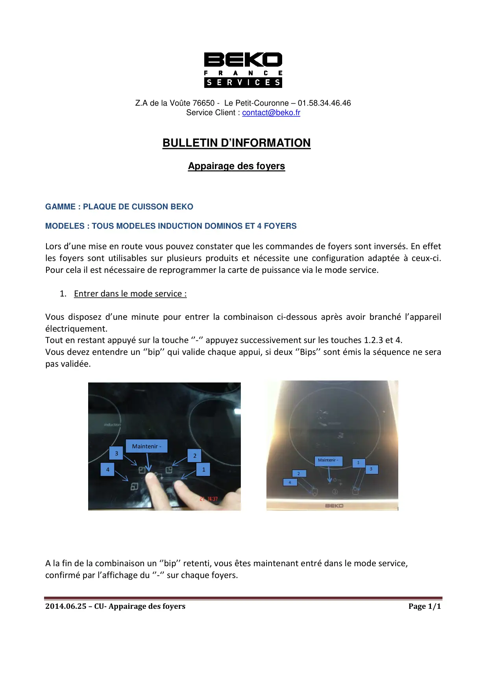
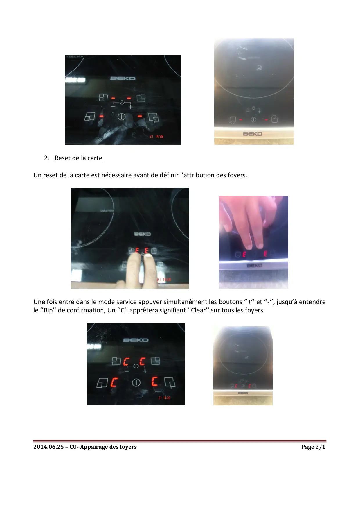
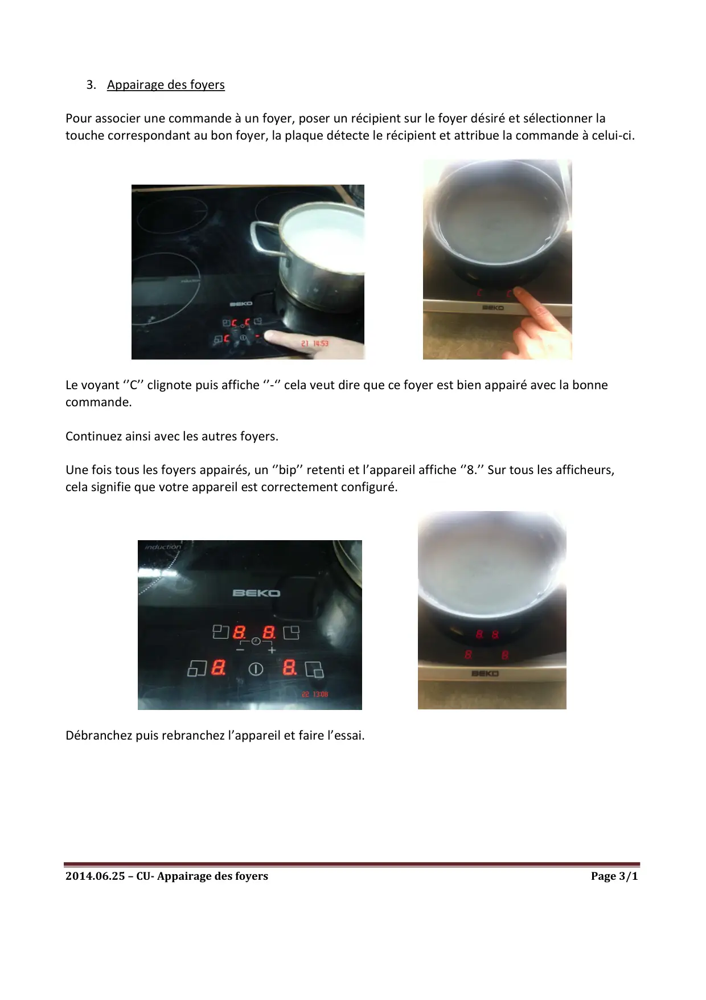

Appairage des foyers induction

2014.06.25 – CU- Appairage des foyersPage 1/1Z.A de la Voûte 76650 - Le Petit-Couronne – 01.58.34.46.46Service Client : contact@beko.frBULLETIN D’INFORMATIONAppairage des foyersGAMME : PLAQUE DE CUISSON BEKOMODELES : TOUS MODELES INDUCTION DOMINOS ET 4 FOYERSLors d’une mise en route vous pouvez constater que les commandes de foyers sont inversés. En effetles foyers sont utilisables sur plusieurs produits et nécessite une configuration adaptée à ceux-ci.Pour cela il est nécessaire de reprogrammer la carte de puissance via le mode service.1. Entrer dans le mode service :Vous disposez d’une minute pour entrer la combinaison ci-dessous après avoir branché l’appareilélectriquement.Tout en restant appuyé sur la touche ‘’-‘’ appuyez successivement sur les touches 1.2.3 et 4.Vous devez entendre un ‘’bip’’ qui valide chaque appui, si deux ‘’Bips’’ sont émis la séquence ne serapas validée.A la fin de la combinaison un ‘’bip’’ retenti, vous êtes maintenant entré dans le mode service,confirmé par l’affichage du ‘’-‘’ sur chaque foyers.1234Maintenir -
1 / 3
2014.06.25 – CU- Appairage des foyersPage 2/12. Reset de la carteUn reset de la carte est nécessaire avant de définir l’attribution des foyers.Une fois entré dans le mode service appuyer simultanément les boutons ‘’+’’ et ‘’-‘’, jusqu’à entendrele ‘’Bip’’ de confirmation, Un ‘’C’’ apprêtera signifiant ‘’Clear’’ sur tous les foyers.
2 / 3
2014.06.25 – CU- Appairage des foyersPage 3/13. Appairage des foyersPour associer une commande à un foyer, poser un récipient sur le foyer désiré et sélectionner latouche correspondant au bon foyer, la plaque détecte le récipient et attribue la commande à celui-ci.Le voyant ‘’C’’ clignote puis affiche ‘’-‘’ cela veut dire que ce foyer est bien appairé avec la bonnecommande.Continuez ainsi avec les autres foyers.Une fois tous les foyers appairés, un ‘’bip’’ retenti et l’appareil affiche ‘’8.’’ Sur tous les afficheurs,cela signifie que votre appareil est correctement configuré.Débranchez puis rebranchez l’appareil et faire l’essai.
3 / 3